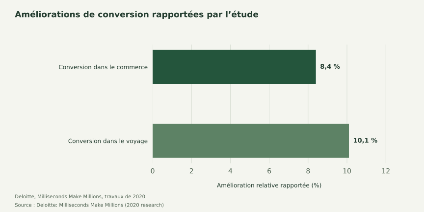

Un site peut sembler rapide pendant un après-midi calme puis ralentir lorsqu’une campagne envoie des clients sur la même page. Il peut aussi obtenir un bon score en laboratoire alors que les visiteurs rencontrent des interactions lentes, une mise en page instable ou un paiement qui échoue sous la charge. Le travail devient plus utile lorsqu’il suit la tâche client entière.
La performance web couvre chargement, réactivité, stabilité visuelle, comportement du serveur et capacité à absorber le trafic attendu. Les Core Web Vitals mesurent des aspects importants de l’expérience, sans décrire toutes les exigences opérationnelles. Une page rapide qui ne sauvegarde pas la réservation ne rend pas le service attendu.
Ce guide explique les indicateurs, les travaux reliant vitesse et comportement commercial, ainsi qu’une démarche pour la fiabilité quotidienne et les périodes chargées. Les recommandations et séquences de test constituent notre analyse. Les études historiques illustrent une relation à examiner, sans promettre un gain de conversion précis pour votre site.
Dans l’étude Milliseconds Make Millions, Deloitte examine quatre semaines de données mobiles de marques du commerce, du voyage, du luxe et de la génération de prospects en Europe et aux États-Unis. Le rapport associe une amélioration naturelle de vitesse de 0,1 seconde à une progression des conversions de 8,4 % dans le commerce et de 10,1 % dans le voyage.

Deloitte, Milliseconds Make Millions, travaux de 2020. Étude mobile historique de quatre semaines, sur des marques sélectionnées en Europe et aux États-Unis, commandée par Google. Association avec une amélioration naturelle de vitesse de 0,1 seconde ; ni points de pourcentage, ni garantie causale, ni prévision LCP ou INP. Consulter la source et sa méthodologie.
| Groupe ou objectif | Valeur |
|---|---|
| Conversion dans le commerce | 8,4 % |
| Conversion dans le voyage | 10,1 % |
Ces travaux historiques ont été publiés en 2020 à la demande de Google. Les résultats concernent les marques et la méthode étudiées. Il s’agit d’améliorations relatives, pas de points de pourcentage. Ils ne démontrent pas un rendement universel obtenu en retirant 0,1 seconde à un indicateur moderne comme le LCP.
L’enseignement métier consiste à mesurer la vitesse avec le parcours que vous voulez voir aboutir. Vos résultats dépendent notamment des appareils, du trafic, de la demande, des formulaires et des autres modifications. L’étude soutient une hypothèse à tester ; l’évaluation de votre mise en œuvre exige ensuite des données au périmètre approprié.
Le chargement concerne la disponibilité du contenu. L’interaction concerne la réponse de l’interface après une action. La capacité concerne le comportement lorsque le travail augmente. Un projet peut améliorer une dimension sans changer les autres. Définissez donc le problème avant de choisir une technique d’optimisation.
Une grande image principale peut retarder le contenu visible. Un script complexe peut ralentir le menu après son affichage. Une requête de base peut devenir limitante seulement lorsque de nombreux clients recherchent simultanément. Ces situations nécessitent des investigations et corrections différentes.
Décomposez le parcours essentiel : page d’entrée, choix du service ou produit, formulaire, paiement éventuel et confirmation. Identifiez les systèmes de chaque étape. Cette carte permet à l’équipe de rattacher un symptôme à une partie plausible de l’architecture plutôt que de modifier l’hébergement au hasard.
Ne vous reposez pas sur un score unique. Gardez visibles les mesures, conditions et erreurs. Un score résume parfois l’évaluation d’un outil ; le développeur a besoin du délai ou de l’échec réel pour décider. Le dirigeant doit comprendre quelle tâche client la modification vise à améliorer.
Les recommandations web.dev de Google définissent le Largest Contentful Paint comme un indicateur de chargement, l’Interaction to Next Paint comme une mesure de réactivité et le Cumulative Layout Shift comme une mesure de stabilité. Les seuils recommandés sont un LCP inférieur ou égal à 2,5 secondes, un INP de 200 millisecondes au plus et un CLS de 0,1 au plus.
Évaluez ces seuils au 75e centile, en séparant mobile et ordinateur. Un centile décrit une distribution, pas le visiteur le plus rapide ni une moyenne. Un bon résultat sur une catégorie d’appareils ne démontre pas une expérience identique pour une autre catégorie.
Le LCP demande quand le contenu principal visible apparaît. L’INP décrit la réactivité aux interactions. Le CLS suit les déplacements inattendus. Ensemble, ils couvrent des aspects importants, sans mesurer la justesse de l’information, la compréhension du formulaire ou l’arrivée du paiement dans les dossiers de l’entreprise.
Joignez les définitions au rapport. Sans elles, l’équipe peut comparer des chiffres incompatibles ou transformer une exécution de laboratoire en affirmation sur tous les visiteurs. L’objectif est une compréhension partagée permettant aux équipes commerciales, de conception et d’ingénierie de discuter du même problème.
Les données de terrain reflètent des visites réelles avec divers appareils, réseaux et interactions. Le laboratoire crée un environnement contrôlé pour reproduire et diagnostiquer. Les deux sont utiles ; l’erreur consiste à croire qu’ils répondent exactement à la même question.
Un test contrôlé peut identifier une ressource lourde, un retard d’affichage ou un script bloquant le fil principal. Il facilite une comparaison avant-après lorsque les conditions restent constantes. Ses réglages de réseau et d’appareil peuvent néanmoins différer de ceux du public réel.
Les mesures de terrain peuvent révéler un problème sur un type de page ou un groupe d’utilisateurs. Elles nécessitent parfois du trafic et une période d’observation, tandis qu’une agrégation masque des écarts. Vérifiez couverture et fenêtre temporelle avant de conclure à partir de données rares ou absentes.
Pour un petit site, commencez par des essais reproductibles et un parcours direct, puis ajoutez une mesure réelle lorsque pertinent. Signalez les éléments manquants. Expliquer l’insuffisance des données de terrain apporte davantage qu’un résultat rassurant fondé sur des observations inexistantes.
Le guide d’optimisation du LCP de web.dev décompose notamment réponse initiale, découverte, transfert de la ressource et rendu. Cette décomposition évite de compresser longuement une image lorsque le navigateur attend surtout avant de la demander.
Identifiez l’élément réellement le plus important sur des pages représentatives : image principale, produit ou bloc de texte. Vérifiez sa découverte et les styles ou scripts qui retardent l’affichage. Des modèles différents peuvent présenter des éléments et goulots d’étranglement différents.
Utilisez des dimensions adaptées et des formats modernes pris en charge. Indiquez la largeur et la hauteur pour réserver l’espace. Évitez d’envoyer une très grande image d’ordinateur à un petit écran lorsqu’une variante responsive convient. Rendez la ressource importante découvrable sans logique côté client inutile.
Testez les changements ensemble. Un fichier réduit peut encore arriver tard s’il est découvert tard. Une réponse rapide peut laisser le rendu bloqué. Notez l’étape améliorée et l’effet sur la mesure visible pour le client. L’investigation devient reproductible et son résultat plus facile à expliquer.
L’explication de l’INP par Google examine le délai entre une interaction et la prochaine mise à jour visuelle, dont le travail sur le fil principal. Une page peut finir son chargement et rester lente à l’ouverture d’un filtre ou pendant la saisie d’un formulaire complexe.
Observez les actions répétées : recherche, menu, variantes, progression de formulaire et commande. Utilisez les outils du navigateur pour identifier les traitements longs et les calculs ou rendus inutiles après chaque entrée. L’interface doit répondre à la tâche plutôt qu’exécuter des opérations sans valeur visible.
Découpez le travail lourd lorsque pertinent et ne chargez pas les fonctions avant leur besoin. Donnez un retour rapide et utile. Un indicateur peut confirmer le démarrage, mais ne doit pas masquer une opération indéfiniment bloquée. Définissez aussi l’erreur et le chemin de reprise.
Examinez les scripts tiers avec le code propre au site. Messagerie et statistiques ajoutent parfois du travail malgré un petit fichier applicatif. Chaque outil doit justifier son coût par un besoin métier. Retirer une dépendance inutile simplifie la maintenance tout en réduisant les opérations du navigateur.
Un déplacement peut faire perdre le fil ou déclencher la mauvaise commande. Réservez l’espace des images, vidéos, publicités et contenus tardifs. Examinez les polices et messages dynamiques, en plus des dimensions d’images les plus évidentes.
Observez la page pendant le chargement et après une action. Une bannière au-dessus du formulaire peut déplacer le champ utilisé. Une recommandation tardive peut faire bouger un bouton. Une capture prise lorsque tout est stabilisé ne révèle pas forcément le défaut.
Concevez les messages d’état selon la tâche. Si une erreur doit prendre de la place, montrez-la sans désorienter la personne. Si un avis de consentement apparaît, gardez la page utilisable et un focus cohérent. Le comportement de l’interface doit rester compréhensible au fil de ces changements.
Stabilité et accessibilité se renforcent souvent. Position prévisible et retours lisibles aident différentes méthodes de saisie et d’agrandissement. Notre guide d’accessibilité web explique ces vérifications plus largement, avec clavier, étiquettes et correction des erreurs.
Le cache réduit certaines répétitions en réutilisant un résultat. Les fichiers statiques et pages publiques offrent souvent de bonnes occasions. Les comptes, contenus personnels et transactions changeantes exigent davantage de précision : une mauvaise réponse peut être périmée ou remise à la mauvaise personne.
Définissez une politique par contenu et usage : partage autorisé, durée d’utilité et invalidation après changement. N’appliquez pas une règle générale à toute l’application simplement parce qu’elle accélère l’accueil pendant un essai rapide. La nature de chaque réponse doit guider la configuration.
Testez plusieurs comptes et rôles. Un client ne doit pas recevoir la page d’un autre ni un solde ancien. Vérifiez cookies d’authentification, clés de cache et réponses privées sur la plateforme réelle. Les détails dépendent de l’infrastructure et de l’application, et demandent une vérification adaptée.
Examinez aussi l’origine. Le cache peut diminuer la charge sans corriger une requête inefficace ou une dépendance externe lente. Un bon plan identifie les endroits où la réutilisation aide et ceux où l’opération doit évoluer. Documentez les règles pour qu’une future fonction ne contredise pas leurs hypothèses.
Partez des actions attendues plutôt que du seul nombre de visiteurs. Dix personnes lisant une page publique ne créent pas la même charge que dix utilisateurs déposant des fichiers, interrogeant un catalogue ou payant. Décrivez le mélange d’actions et leur rythme d’arrivée.
Utilisez l’historique pour estimer périodes normales et chargées. Pour un nouveau service, notez les hypothèses et testez plusieurs niveaux. Un nombre de connexions inventé n’est pas une prévision. Une campagne, un événement ou une ancienne période commerciale fournit une base plus utile qu’une cible empruntée à une autre entreprise.
Incluez l’arrière-plan : imports, exports, images, rapports et courriels peuvent concurrencer les ressources au mauvais moment. Un test limité à la consultation publique risque de manquer la base ou la file de traitements qui limite réellement le service.
Fixez les conditions d’acceptation. Le parcours aboutit dans une plage de réponse convenue, les erreurs restent sous une limite et le service récupère après la baisse. Définissez ces objectifs avec l’entreprise. Le rapport doit montrer les résultats, y compris le composant qui échoue avant la charge visée.
Utilisez un environnement et des services que vous êtes autorisé à tester. Choisissez des volumes de données et un scénario proches des tâches principales. Coordonnez l’essai avec l’hébergement et les prestataires pour mesurer des comportements utiles sans créer de vraies transactions ou notifications clients indésirables.
Augmentez progressivement la charge et observez conjointement délai, erreurs, débit, ressources, base et longueur des files. Une moyenne stable peut cacher des cas très lents ou une accumulation de travail. Examinez la distribution et les traitements en attente derrière l’interface.
Vérifiez la récupération lorsque la charge cesse. La file se vide-t-elle ? La mémoire retrouve-t-elle un niveau attendu ? Une nouvelle requête ordinaire aboutit-elle ? Un système qui traverse le pic mais reste ensuite dégradé nécessite encore une investigation.
Documentez les conditions du test, la version applicative, les paramètres d’infrastructure et les limites rencontrées. Le résultat s’applique à cette configuration et à ce scénario précis. Il ne démontre pas que le service tiendra face à toutes les campagnes, attaques ou utilisations inattendues possibles. Recommencez les contrôles pertinents après les changements importants, sans traiter un exercice réussi comme un certificat permanent de capacité pour toutes les situations futures.
Une page de réussite ne prouve pas l’enregistrement métier du paiement. Les prestataires utilisent couramment des événements asynchrones pour confirmer les changements. L’application doit les traiter correctement malgré les répétitions et les retards, sans dépendre uniquement du retour visible dans le navigateur.
La documentation des webhooks Stripe décrit les livraisons et exigences d’intégration. Pour Stripe, suivez ses consignes de signature, doublons et traitement. Ne généralisez pas les délais et répétitions d’un prestataire à tous les autres services de paiement.
Sortez les travaux lents de la réponse critique lorsque l’architecture le permet. Une file durable peut permettre d’accuser réception puis de traiter séparément. Il faut toujours définir répétitions, investigation et surveillance des éléments qui restent en attente : la file n’efface pas la responsabilité du résultat.
Au pic, contrôlez exactitude et vitesse. Comptez commandes terminées, doubles actions, confirmations absentes et traitements échoués. Une réponse accélérée qui perd des dossiers n’est pas une amélioration. Notre analyse de la fiabilité des API de paiement approfondit états et rapprochement au-delà de l’apparence du paiement.
Choisissez un petit ensemble de mesures directement reliées à la tâche : formulaires effectivement reçus, réservations réalisées, commandes complétées, délais de réponse et erreurs non résolues. Gardez leurs définitions et périodes d’observation visibles dans le rapport. Un tableau devient difficile à interpréter et à croire lorsque chaque carte utilise un dénominateur différent sans expliquer cette différence au lecteur.
Segmentez lorsque cela aide la décision. Mobile et ordinateur, accès public et connecté ou principaux modèles de pages peuvent révéler des différences masquées par la moyenne générale. Trop de segments produisent aussi des chiffres instables sur un petit site : vérifiez la taille utile de chaque groupe.
Examinez le contexte commercial. Une conversion plus basse pendant une campagne de notoriété peut refléter une autre intention de visite. Le revenu peut changer avec les tarifs ou le stock. Attribuez à la performance ce que les preuves permettent, en gardant les autres explications visibles.
Intégrez les retours qualitatifs. Un client signalant un formulaire bloqué peut révéler le problème avant qu’un indicateur agrégé devienne convaincant. Reliez le retour aux journaux et à une reproduction. Le meilleur tableau aide à choisir la prochaine investigation au lieu d’ajouter simplement des graphiques.
Avant le lancement, confirmez le parcours attendu et les pages d’arrivée. Testez les tâches sur des appareils représentatifs. Examinez images, scripts, cache, base et intégrations nécessaires à la transaction. Reliez les vérifications au service que les clients doivent terminer.
Confirmez sauvegardes, reprise, responsabilité de déploiement et contacts. Déterminez qui peut suspendre une livraison ou désactiver une option. Gardez une version antérieure utilisable lorsque le retour reste sûr et comprenez les effets des changements de base.
Pendant l’événement, surveillez conjointement parcours et infrastructure. Une file croissante ou davantage d’actions incomplètes importe même si l’accueil répond. Informez précisément les personnes en contact avec les clients pour qu’elles connaissent les alternatives et puissent expliquer la situation.
Après l’événement, comparez attentes et observations. Notez goulots, alertes utiles et travail manuel nécessaire. Cette liste proposée soutient une revue, sans remplacer le plan propre à l’application. Utilisez les résultats pour améliorer la prochaine livraison et l’estimation de capacité.
Une route lente peut refléter une requête, une chaîne de requêtes ou des appels répétés inutilement. Partez de l’action et suivez son travail. Un filtre qui lance plusieurs demandes superposées exige une correction différente d’une requête unique parcourant une grande table.
Utilisez une analyse appropriée et une observabilité compatible avec la production pour identifier l’opération coûteuse. Regardez le volume récupéré et les champs jamais utilisés. Un index aide certains accès ; en ajouter sans comprendre écritures, stockage et plan d’exécution peut créer des coûts inutiles.
Testez un volume représentatif. Quelques dossiers ne reproduisent pas plusieurs années de commandes ou d’historique. Indiquez la taille du jeu dans le rapport pour que la conclusion possède une limite lisible. Une démonstration sur une petite base ne suffit pas à prévoir toutes les situations futures.
Envisagez pagination et traitements de fond selon la tâche. Chercher un dossier ne devrait pas imposer le téléchargement de tous les dossiers. Un grand export peut mieux fonctionner comme traitement en file avec notification que comme requête laissant le navigateur attendre longtemps.
Après l’optimisation, vérifiez la justesse : dossiers, totaux, permissions et ordre. Une requête plus rapide qui oublie une condition peut fournir une mauvaise réponse. Le changement doit préserver le sens métier de l’opération autant qu’améliorer son délai.
Pour chaque amélioration importante, notez page ou tâche, version, appareil, réseau, volume, état du cache, outil et résultat. Ce registre aide à distinguer une progression réelle d’un simple changement d’environnement d’essai. Il évite de comparer des résultats qui ne décrivent pas la même situation.
Répétez le test contrôlé suffisamment pour examiner la stabilité du résultat, tout en reconnaissant que plusieurs exécutions de laboratoire ne reproduisent toujours pas chaque visiteur réel. Comparez des distributions ou des fourchettes représentatives lorsque les outils le permettent. Évitez de sélectionner uniquement l’exécution la plus rapide pour constituer le rapport final présenté à l’entreprise.
Modifiez un facteur majeur à la fois lorsque pertinent. Remplacer images, scripts, hébergement et design ensemble peut améliorer le site sans révéler la cause précise. Une livraison combinée est parfois nécessaire ; indiquez cette limite au lieu d’inventer une attribution détaillée.
Reliez l’expérience à la publication. Précisez les éléments qui justifient la livraison, les contrôles restant à effectuer et la détection d’une régression. Un test local réussi apporte une preuve, sans achever à lui seul tout le processus d’exploitation.
Gardez cette rigueur dans le rapport commercial. Présentez le résultat mesuré et ses conditions, puis l’effet client à examiner. Le client dispose d’un élément concret et proportionné aux preuves. L’équipe possède aussi une meilleure base pour la prochaine investigation.
La performance participe à l’expérience, mais le référencement dépend de nombreux facteurs. Traitez l’optimisation comme une amélioration du service et mesurez ses effets. Évitez de promettre une position précise à partir d’un score ou d’un changement isolé.
Recherchez d’abord le goulot. Médias lourds, scripts, requêtes et cache inadapté ralentissent aussi une infrastructure puissante. La capacité supplémentaire aide lorsque les mesures montrent une limite de ressources et que l’application sait effectivement l’utiliser.
Identifiez la tâche client principale, obtenez une référence reproductible et corrigez le plus grand problème démontré. Vérifiez dans les mêmes conditions et parcourez la tâche réelle. Une amélioration ciblée avec preuve vaut mieux qu’une longue liste d’optimisations supposées.
La performance relie navigateur, application et processus métier. Elle aide à voir l’information, interagir avec confiance et terminer la tâche lorsque la demande augmente. Les mesures doivent expliquer cette expérience et orienter la prochaine décision.
Deux Rives Web conçoit et améliore sites, applications et intégrations avec des tests concrets et une livraison maintenable. Découvrez nos services de développement web, le guide cloud et reprise, ou présentez-nous le parcours à améliorer. Nous pourrons établir la référence, identifier l’étape limitante et préparer un plan ciblé soutenu par des preuves.